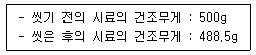

건설재료시험기능사 (2007-04-01 기출문제)
1과목: 건설재료
1. 강의 화학성분 중 인(P)이 많을 때 증가되는 성질은?
- 취성
- 인성
- 탄성
- 휨성
(정답률: 60%)

2. 일반적으로 침입도 60~120 정도의 비교적 연한 스트레이트 아스팔트에 적당한 휘발성 용제를 가하여 점도를 저하시켜 유동성을 좋게 한 아스팔트는?
- 에멀션화 아스팔트
- 컷백 아스팔트
- 블론 아스팔트
- 아스팔타이트
(정답률: 65%)
3. 습기가 없는 실내에서 자연 건조시킨 것으로 골재알속의 빈틈 일부가 물로 가득 차 있는 골재의 함수 상태를 나타낸 것은?
- 습윤 상태
- 표면 건조 포화상태
- 공기 중 건조 상태
- 절대 건조 상태
(정답률: 41%)
4. 분말도가 높은 시멘트의 설명으로 옳지 않은 것은?
- 수화작용이 빠르다.
- 수화작용에 의한 균열이 생기기 쉽다.
- 풍화하기 쉽다.
- 조기강도가 작다.
(정답률: 74%)
5. 플라이애시 시멘트에 관한 설명으로 옳지 않은 것은?
- 워커빌리티가 좋다.
- 장기강도가 크다.
- 해수에 대한 화학 저항성이 크다.
- 수화열이 크다.
(정답률: 48%)
6. 단위무게 1.59t/m3, 비중 2.60인 잔골재의 공극률은?
- 35.85%
- 38.85%
- 41.85%
- 44.85%
(정답률: 45%)
7. A골재의 조립률이 1.75, B골재의 조립률이 3.5인 두 골재를 무게비 4:6의 비율로 혼합 할 때 혼합 골재의 조립률을 구하면?
- 2.8
- 3.8
- 4.8
- 5.8
(정답률: 35%)
8. 포틀랜드 시멘트에 속하지 않는 것은?
- 조강 포틀랜드 시멘트
- 중용열 포틀랜드 시멘트
- 포틀랜드 포졸란 시멘트
- 보통 포틀랜드 시멘트
(정답률: 76%)
9. 다음 석재의 강도 중 가장 큰 것은?
- 압축강도
- 인장강도
- 전단강도
- 휨강도
(정답률: 53%)
10. AE제의 종류에 해당하지 않는 것은?
- 다렉스(darex)
- 포졸리스(pozzolith)
- 시메졸(cemesol)
- 빈졸레진(vinsol resin)
(정답률: 42%)
11. 천연 아스팔트의 종류 중 모래속에 석유가 스며들어가 생긴 것은?
- 록 아스팔트
- 레이크 아스팔트
- 아스팔타이트
- 샌드 아스팔트
(정답률: 52%)
12. 다음 중 흑색 화약에 관한 설명으로 옳지 않은 것은?
- 발화가 간단하고 소규모 장소에서 사용할 수 있다.
- 값이 저렴하고 취급이 간편하다.
- 물속에서도 폭발한다.
- 폭파력은 그다지 강력하지 않다.
(정답률: 70%)
13. 콘크리트가 굳어 가는 도중에 부피를 늘어나게 하여 콘크리트의 건조수축에 의한 균열을 막아주는 혼합재는?
- 포졸란
- 플라이애시
- 팽창재
- 고로 슬래그 분말
(정답률: 53%)
14. 다음의 합성수지 중 열경화성 수지가 아닌 것은?
- 폴리에틸렌 수지
- 요소수지
- 에폭시수지
- 실리콘 수지
(정답률: 45%)
15. 일반적으로 목재의 비중으로 사용되는 것은?
- 생목비중
- 기건비중
- 포수비중
- 절대건조비중
(정답률: 66%)
16. 슬럼프 시험의 주목적은 다음 중 어느 것인가?
- 물-시멘트비의 측정
- 공기량의 측정
- 반죽질기의 측정
- 강도측정
(정답률: 71%)
17. 내부마찰각이 0°인 연약점토를 일축압축시험하여 일축압축강도가 2.45㎏/cm2을 얻었다. 이 흙의 점착력은?
- 0.849㎏/cm2
- 0.95㎏/cm2
- 1.225㎏/cm2
- 1.649㎏/cm2
(정답률: 52%)
18. 아스팔트 침입도 및 침입도 시험에 관한 설명 중 옳지 않은 것은?
- 표준 시험온도는 25°C 이다.
- 침입관입량을 1/10cm 단위로 나타낸 것을 침입도 1로 한다.
- 아스팔트의 반죽질기를 측정하기 위해 실시한다.
- 시료는 부분적으로 과열되지 않도록 주의해서 가열한다.
(정답률: 26%)
19. 콘크리트 배합설계에서 잔골재의 조립률은 어느 정도가 좋은가?
- 2.3 ~ 3.1
- 3.2 ~ 4.9
- 5.0 ~ 6.0
- 6.0 ~ 8.0
(정답률: 86%)
20. 다음 중 시멘트 응결시간 시험방법과 관계가 없는 것은?
- 플로우 테이블 (Flow Table)
- 비카 장치 (Vicat)
- 길모어침 (Gilmour Needles)
- 유리판 (Pat Glass Plate)
(정답률: 47%)
2과목: 건설재료시험
21. 흙의 수축한계 시험에서 공기 건조한 시료를 425μmp로 체질하여 통과한 흙을 약 몇 g 준비하는가?
- 100g
- 70g
- 50g
- 30g
(정답률: 37%)
22. 흙의 다짐정도를 판정하는 시험법과 거리가 먼 것은?
- 평판재하시험
- 베인(Vane)시험
- 현장 흙의 단위무게 시험
- 노상토 지지력비 시험
(정답률: 22%)
23. 흙의 비중시험에서 일반적인 흙은 10분 이상 끓여야 하는데 그 이유로 맞는 것은?
- 비중병이 깨지지 않도록 하기 위해
- 흙의 입자가 작아지도록 하기 위해
- 기포를 제거하기 위해
- 흡수력을 향상시키기 위해
(정답률: 89%)
24. 골재 시험에서 “조립률이 작다”는 의미는?(오류 신고가 접수된 문제입니다. 반드시 정답과 해설을 확인하시기 바랍니다.)
- 골재 입자가 크다.
- 골재 모양이 구형이다.
- 골재 입자가 작다.
- 골재 비중이 작다.
(정답률: 46%)
25. 굳지 않은 콘크리트에 대한 시험방법이 아닌 것은?
- 워커빌리티 시험
- 공기량 시험
- 슈미트해머 시험
- 블리딩 시험
(정답률: 57%)
26. 흙의 소성한계 시험에 사용되는 기계 및 기구가 아닌 것은?
- 둥근봉
- 항온건조기
- 불투명 유리판
- 홈파기날
(정답률: 66%)
27. 아스팔트 연화점 시험에서 시료가 강구와 함께 시료대에서 얼마정도 떨어진 밑단에 닿는 순간의 온도를 연화점으로 하는가?
- 12.5mm
- 25.4mm
- 34.5mm
- 45.4mm
(정답률: 23%)
28. 골재의 체가름 시험을 할 때 체를 놓는 순서로 옳은 것은?
- 체눈이 가는 체는 위로 굵은 체는 밑으로 놓는다.
- 체눈이 굵은 체와 가는 체를 섞어 놓는다.
- 체눈이 굵은 체는 위에, 가는 체눈 밑에 놓는다.
- 체눈의 크기에 관계없이 놓는다.
(정답률: 80%)
29. 다짐봉을 사용하여 콘크리트 휨강도시험용공시체를 제작하는 경우 다짐횟수는 표면적 약 몇 cm2당 1회의 비율로 다지는가?
- 14cm2
- 10cm2
- 8cm2
- 7cm2
(정답률: 35%)
30. 콘크리트 배합설계에서 단위수량이 170kg/m2이고, 단위 시멘트량이 340kg/m2이면 물-시멘트비는 얼마인가?
- 100%
- 50%
- 200%
- 0%
(정답률: 26%)
31. 콘크리트의 압축강도시험을 위한 공시체의 제작이 끝나 몰드를 떼어낸 후 습윤 양생을 한다. 이때 가장 적당한 수온은?
- 8~12°C
- 12~16°C
- 18~22°C
- 26~30°C
(정답률: 84%)
32. 2μm이하의 점토함유율에 대한 소성지수와의 비를 무엇이라 하는가?
- 부피변화
- 선수축
- 활성도
- 군지수
(정답률: 52%)
33. 골재의 단위무게를 구하는 방법 중 충격을 이용해서 구하는 방법은 용기의 한쪽 면을 몇 cm 가량 올렸다가 떨어뜨리는가?
- 2cm
- 5cm
- 10cm
- 15cm
(정답률: 53%)
34. 콘크리트의 휨강도시험에서 지간이 55cm이고, 시험기에 나타난 최대하중이 3ton이었다. 또한 공시체지간의 3등분 중앙부에서 파괴되었다. 휨 강도는 약얼마인가?
- 40㎏/cm2
- 49㎏/cm2
- 54㎏/cm2
- 58㎏/cm2
(정답률: 37%)
35. 르샤틀리에 비중병의 0.5ml 눈금까지 석유를 주입하고 시료 64g(시멘트)을 가하여 눈금이 21ml로 증가되었을 때 시멘트 비중은 얼마인가?
- 1.75
- 2.31
- 2.84
- 3.12
(정답률: 62%)
36. 단면적이 80mm2인 강봉을 인장시험하여 항복점 하중 2560kg, 최대하중 3680kg을 얻었을 때 인장강도는 얼마인가?
- 70㎏/mm2
- 46㎏/mm2
- 32㎏/mm2
- 18㎏/mm2
(정답률: 35%)
37. 흙의 액성 한계 시험에서 황동 접시를 측정기에 장치하고 크랭크를 1초에 몇 회 속도로 회전시키는가?
- 2회
- 4회
- 6회
- 8회
(정답률: 28%)
38. KS F 2414에 규정된 콘크리트의 블리딩 시험은 굵은 골재의 최대 치수가 얼마 이하인 경우에 적용하는 그 기준은?
- 25mm
- 50mm
- 60mm
- 80mm
(정답률: 63%)
39. 골재에 포함된 잔 입자 시험(KS F 2511) 결과 다음과 같은 자료를 구하였다. 여기서 0.08mm 체를 통과하는 잔 입자량(%)을 구하면?

- 1.6%
- 2.0%
- 2.1%
- 2.3%
(정답률: 44%)
40. 콘크리트의 슬럼프 시험은 콘크리트를 몇 층으로 투입하고 각층 몇 회씩 다져야 하는가?
- 2층 35회
- 2층 20회
- 3층 25회
- 3층 20회
(정답률: 77%)
3과목: 토질
41. 아스팔트 신도시험에서 시험기를 가동하여 매분어느 정도의 속도로 시료를 잡아당기는가?(오류 신고가 접수된 문제입니다. 반드시 정답과 해설을 확인하시기 바랍니다.)
- 2± 0.25mm
- 3± 0.25mm
- 4± 0.25mm
- 5± 0.25mm
(정답률: 55%)
42. 모르타르 압축강도 시험시에 사용되는 재료로서 시멘트 510g에 표준모래는 몇 g이 필요한가?(관련 규정 개정전 문제로 여기서는 기존 정답인 2번을 누르면 정답 처리됩니다. 자세한 내용은 해설을 참고하세요.)
- 1326g
- 1275g
- 1250g
- 1224g
(정답률: 38%)
43. 콘크리트 압축강도용 표준 공시체의 파괴 시험에 서 파괴하중이 36t일 때 콘크리트의 압축강도는? (단, 지름 15cm인 몰드를 사용)
- 204kg/cm2
- 214kg/cm2
- 219kg/cm2
- 229kg/cm2
(정답률: 20%)
44. 수축한계 시험에서 수은을 사용하는 이유는 무엇을 구하기 위한 것인가?
- 젖은 흙의 무게
- 젖은 흙의 부피
- 건조기에서 건조시킨 흙의 무게
- 건조기에서 건조시킨 흙의 부피
(정답률: 49%)
45. 용기의 무게가 15g일 때 용기에 시료를 넣어 총 무게를 측정하여 475g이었고 노 건조시킨 다음 무게가 422g이었다. 이 때의 함수비는?
- 8.67%
- 10.45%
- 13.02%
- 25.42%
(정답률: 27%)
46. 어느 흙의 자연함수비가 그 흙의 액성한계보다 높다면 그 흙의 상태는?
- 소성상태에 있다.
- 고체상태에 있다.
- 반고체상태에 있다.
- 액성상태에 있다.
(정답률: 64%)
47. 유선망을 그리는 주된 목적으로 가장 타당한 것은?
- 전단강도를 알기 위한 것이다.
- 압밀 침하량을 결정하기 위한 것이다.
- 유효 응력을 알기 위한 것이다.
- 침투수량을 결정하기 위한 것이다.
(정답률: 36%)
48. 다짐 곡선에서 최대 건조 단위 무게에 대응하는 함수비를 무엇이라 하는가?
- 적정 함수비
- 최대 함수비
- 최소 함수비
- 최적 함수비
(정답률: 69%)
49. 어떤 흙의 전단시험 결과 점착력 C=0.5kg/cm2, 흙입자에 작용하는 수직응력 σ= 5.0kg/cm2, 내부 마찰각 ø=30° 일 때 전단 강도는?
- 2.3kg/cm2
- 3.4kg/cm2
- 4.5kg/cm2
- 5.6kg/cm2
(정답률: 18%)
50. 강성포장의 구조나 치수를 설계하기 위하여 지반지지력계수 K를 결정하는 시험방법은?
- 다짐시험
- CBR시험
- 평판재하시험
- 전단시험
(정답률: 29%)
51. 연약한 점토지반에서 전단강도를 구하기 위하여 실시하는 현장 시험법은?
- Vane 시험
- 현장 C.B.R 시험
- 직접전단시험
- 압밀시험
(정답률: 70%)
52. 다음 중 현장 흙의 단위 무게를 구하기 위한 시험방법의 종류가 아닌 것은?
- 모래치환법
- 고무막법
- 방사선 동위원소법
- 공내재하법
(정답률: 46%)
53. 흙의 삼상도에서 포화도에 대한 설명 중 잘못된것은?
- 포화도가 0%라는 것은 간극속에 물이 하나도 없음을 의미한다.
- 포화도가 0%라는 것은 이 흙이 완전건조 상태에 있다고 말한다.
- 포화도가 100%라는 것은 간극이 완전히 물로 채워져 있음을 의미한다.
- 포화도가 50%라는 것은 이 흙의 절반이 물로 채워져 있음을 의미한다.
(정답률: 40%)
54. 드롭해머를 사용한 말뚝 타입시 말뚝의 극한 지지력을 구한 값은? (단, 엔지니어링 뉴스 공식을 사용하며, 해머의 중량( WH=1.7ton, 낙하고(h)=30cm, 타격당 말뚝의 평균 관입량 (S)=2.0cm 이다.)
- 54.38ton
- 37.89ton
- 25.41ton
- 11.23ton
(정답률: 17%)
55. 다음 중 깊은 기초의 종류가 아닌 것은?
- 말뚝기초
- 피어기초
- 케이슨기초
- 후팅기초
(정답률: 61%)
56. 흙의 입도 분석 시험결과 입경 가적 곡선에서 D=0.022mm, D30 = 0.038mm, D60 = 0.13mm 일 때 균등계수는 얼마인가?
- 4.80
- 5.63
- 5.91
- 6.03
(정답률: 16%)
57. 점성토에 대한 일축압축 시험결과 자연시료의 일축압축강도 qu=1.25kg/cm2, 흐트러진 시료의 일축압축강도 qu=0.25kg/cm2 일 때 이 흙의 예민비는?
- 2.0
- 3.0
- 4.0
- 5.0
(정답률: 26%)
58. 흙덩어리를 손으로 밀어 지름 3mm의 국수 모양으로 만들어 부슬 부슬 해질 때의 함수비는?
- 소성도
- 수축한계
- 소성한계
- 액성지수
(정답률: 70%)
59. 흙의 다짐시험에 필요한 기구가 아닌 것은?
- 샌드콘(Sand cone)
- 원통형 금속제 몰드(mold)
- 래머(rammer)
- 시료추출기(sample extruder)
(정답률: 25%)
60. 어떤 흙의 비중이 2.0, 간극률이 50%인 흙의 포화상태의 함수비를 구한 것은?
- 45.2%
- 47.3%
- 50.0%
- 54.2%
(정답률: 21%)